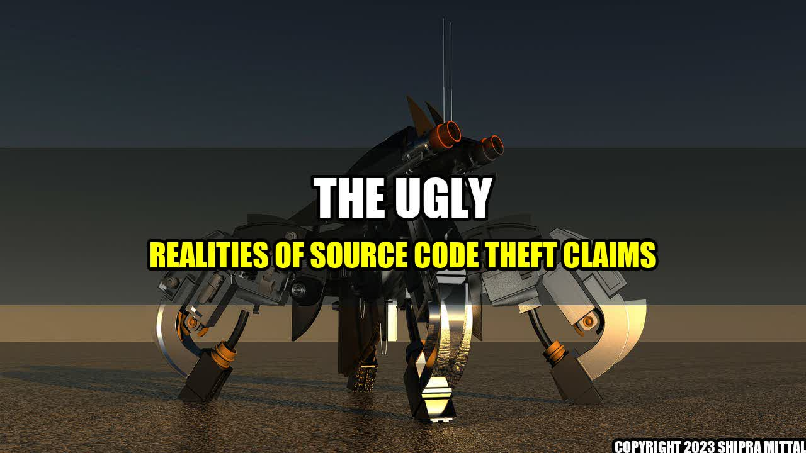

 Imagine that you own a small software company that has invested countless man-hours and resources in developing a groundbreaking software program. You’ve managed to build a decent reputation and loyal customer base for your product but one day, you stumble upon a competitor company selling an eerily similar program to yours. Curiosity gets the best of you, and you decide to investigate further. After a few months of research, you discover that your competitor has shamelessly ripped off your source code, copied your user interface, and even used your website’s design as a blueprint for their own. This scenario is becoming ever more common in today’s digital world. For small business owners, such an incident can be a crushing blow, and they would have to take swift legal action to protect their patent rights. In some cases, source code theft can result in an entire software company being brought down, losing customers and eventually leading to bankruptcy. This article will explore the different aspects of source code theft claims, including how source code theft occurs, quantifiable examples, and practical tips on how to protect your intellectual property.
How Does Source Code Theft Occur?
Source code theft can happen in a myriad of ways. Perhaps the most common form of source code theft is when an employee leaves an organization and takes their former employer's source code with them to their new company. They might also take relevant documents, copyrights, trade secrets, patents, and any other proprietary information with them. In some cases, employees could have stolen the source code and other intellectual property of the company they work for on behalf of their new employers, facilitating a process known as corporate espionage. Hackers, cybercriminals, and even government agencies are often involved in source code theft claims.
Quantifiable Examples
The following are some examples of source code theft claims that have made news headlines in recent years: In 2017, a U.S. Navy contractor was arrested and charged with stealing complete source code for undersea warfare systems to sell to the Chinese. In 2018, an ex-Tesla physicist had stolen more than 40 GB of Tesla's proprietary source code related to the company’s autopilot system and shared the data with his new employer. In 2019, a former software engineer at a security company pled guilty to stealing trade secrets and source code from his former employer and attempted to sell it to a rival agency in the same industry.
Practical Tips on How to Protect Your Intellectual Property
These are some practical tips to help you protect your intellectual property and software code: 1. Develop a source code policy Developing a source code policy and implementing it is an essential step in protecting your intellectual property. Clearly state the company's policy on the ownership of the source code, who owns it, and what can and cannot be done with it. 2. Use copyright protection in your software program Ensure that your software program includes copyright protection so that copies of your work are clearly marked with copyright notices. 3. Use version control and restrict access Use a version control system to track any modifications to your software. Make sure that you restrict access to your source code so that only authorized personnel have access.
Conclusion
In conclusion, source code theft is an unfortunate but very real risk that software developers, tech companies, and others face. It can ruin a small company's reputation and lead to bankruptcy. Whether it is an employee leaving an organization or a hacking attempt, you must be vigilant and take practical steps to protect yourself and your intellectual property.
References
1. Sourced from Law360 [URL] 2. Sourced from Medium's article titled "The Ugly Realities of Software Development: Intellectual Property Theft"[URL]
Curated by Team Akash.Mittal.Blog
Share on Twitter Share on LinkedIn